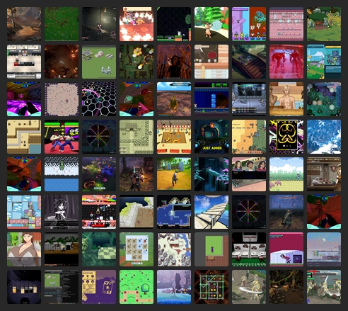

BlueSky Quick Recap #indiedev 2025-07-12
Show Only Saved Posts
Saved Post Num:
---
<< Previous
Home
Next >>

Time Range:
12 Jul 2025
Total Number of Post: 660+
Number of Post Displayed: 236
Post Selection Guidelines
<< Previous
Home
Next >>